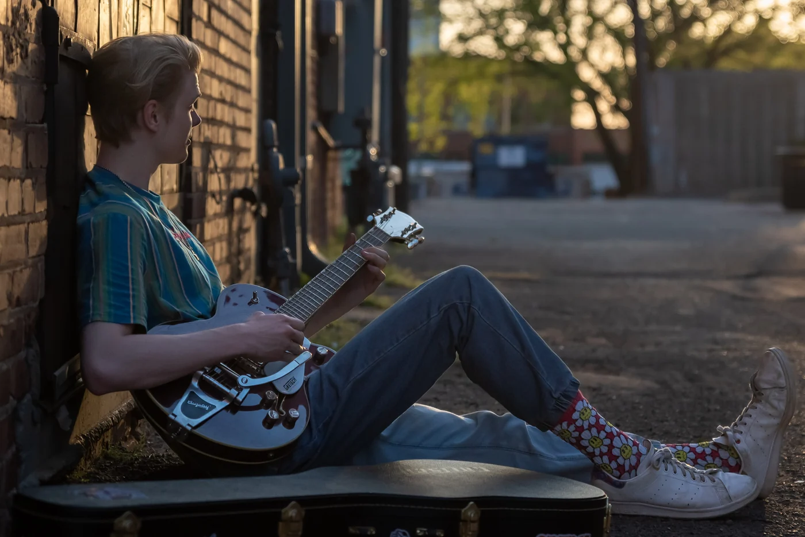
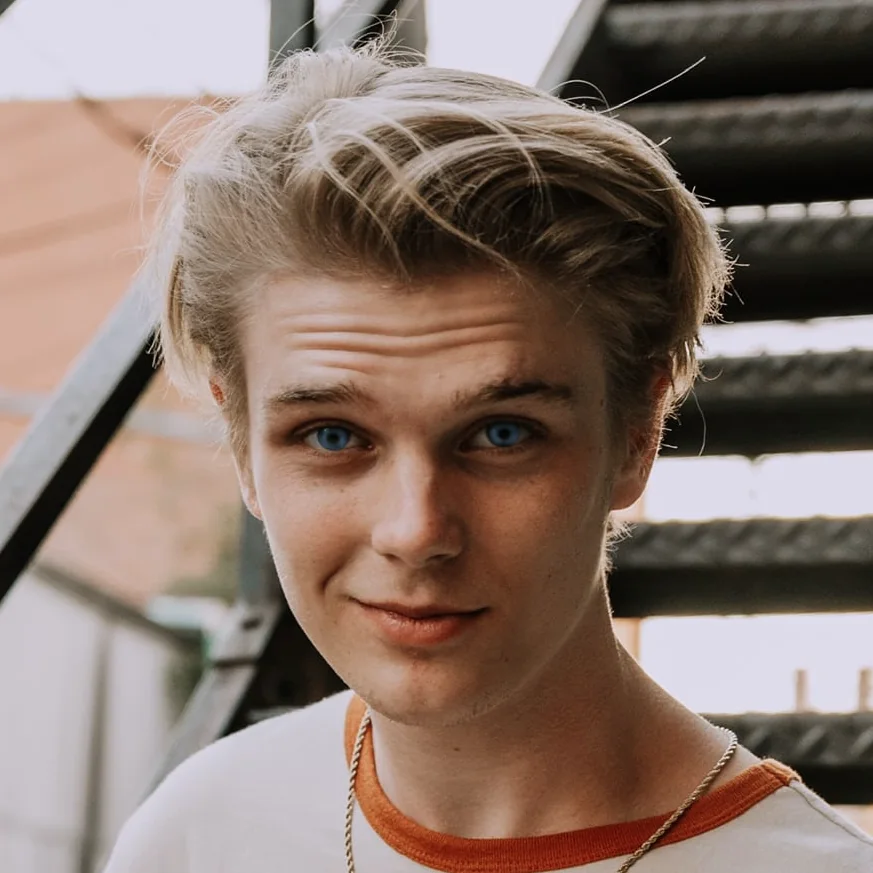
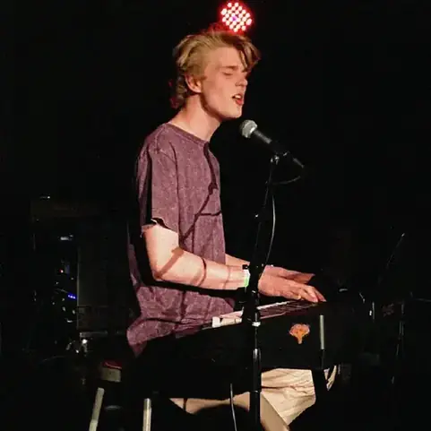

Contact
For shows, press, or anything – message directly.
Email address: ashstumusic@gmail.com
Press Kit (EPK)


Music
Anybody caught singin’ these songs
Woody Guthrie
without our permission, will be
mighty good friends of ourn,
cause we don’t give a dern.
Publish it. Write it. Sing it.
Swing to it. Yodel it.
We wrote it, that’s
all we wanted
to do.
Videos
About Ash Stu
A figment of my own imagination.

